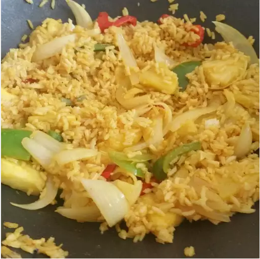

Fried Rice

Description
A very mysterious combination, but certainly delectable.
Is served on the user's favourite Thai restaurant.
Combines the sweetness of pineapple and the spiciness of curry.
Link to the Original Recipe (from AllRecipes.com)
Ingredients (Measurements in the website of the recipe)
- Water
- White rice
- Fish sauce
- Pineapple juice
- Curry Powder
- Vegetable Oil
- Chicken Meat
- Onion
- Pineapple Chunks
Steps
-
Cook the rice as you would any ordinary rice (Original recipe says to bring the water
and rice to boil, then simmer for 20-25 mins until tender.)
-
Whisk together fish sauce, pineapple juice, and curry powder in a small bowl.
-
Heat a large skillet on high. Cook chicken and onion until chicken is no longer pink
and onion becomes translucent (OG recipe says to cook for around five minutes).
-
Stir in the cooked rice, pineapple chunks, and the curry mixture. Cook while stirring
for about 5 minutes (or until rice is hot).